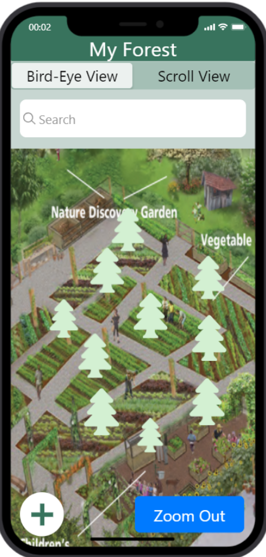
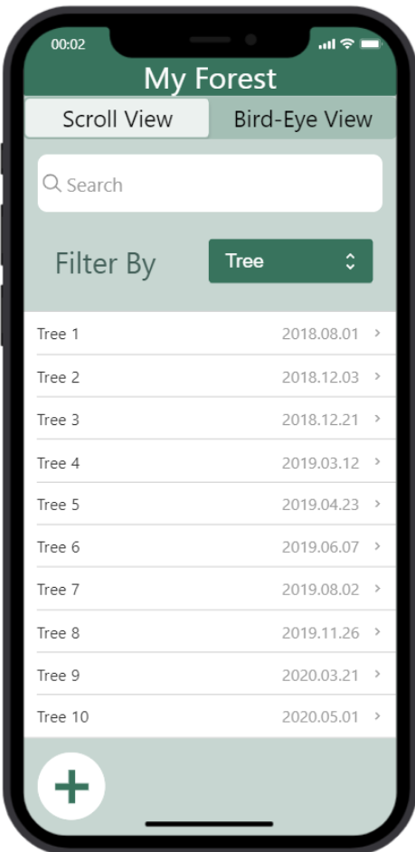
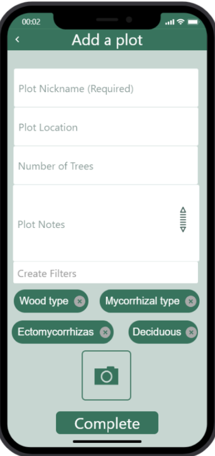
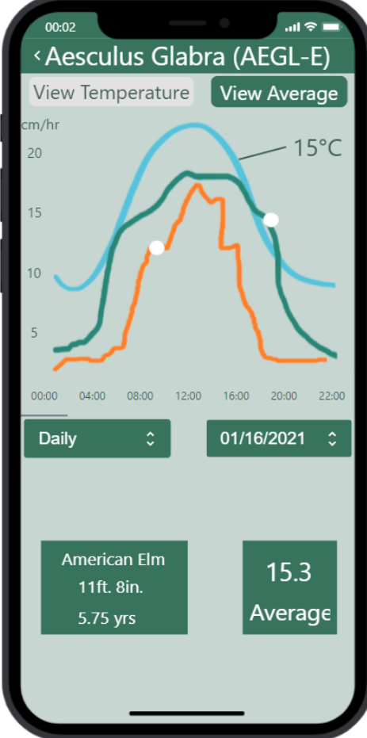
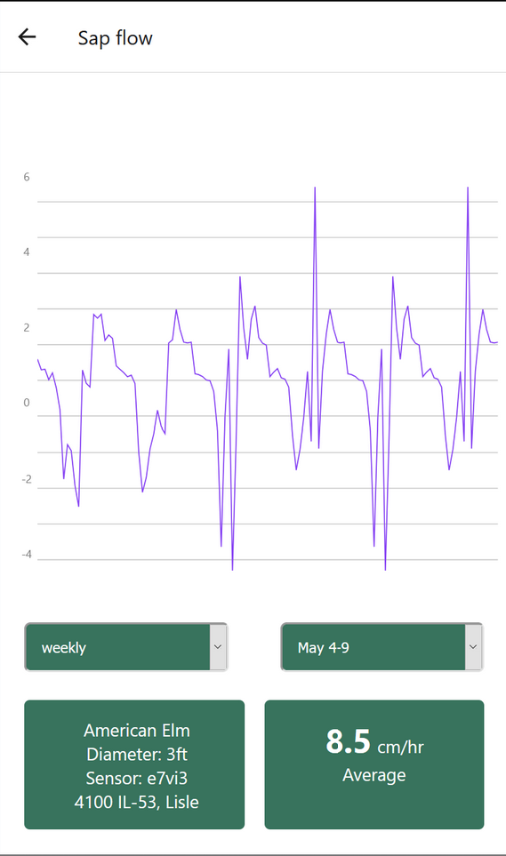
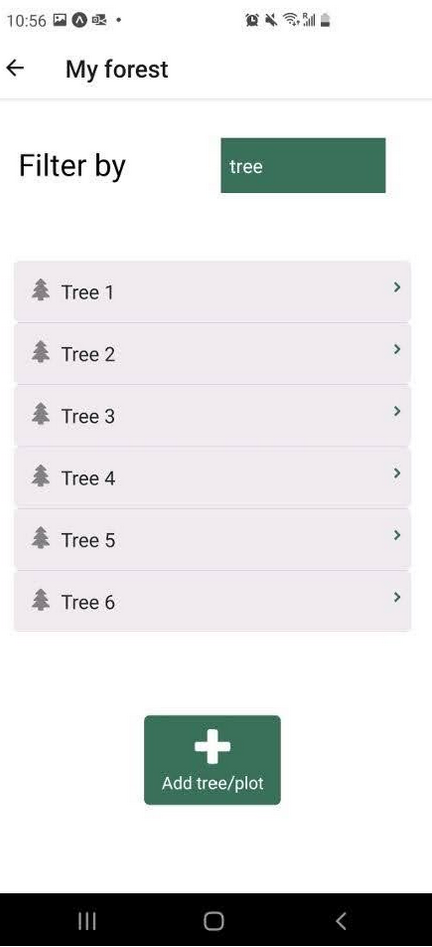
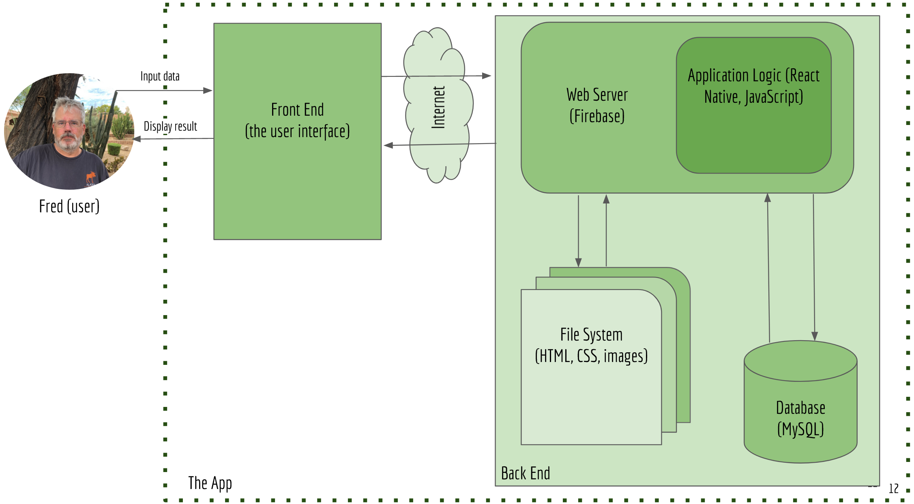

Problem statement
Arborists at Morton Arboretum in Illinois were trying to monitor the health of their trees via sensors that saved data to an SD card. That SD card was periodically fetched and data extracted, graphed, and processed entirely by hand or by a Python script. This multi-step process takes lots of time and is very sensitive to human error.
Our solution
Megan Yaur, Doreen Du, Jeremiah McDonald, and I designed an app, TreeSearcher, to simplify data processing and visualization. The app would connect to the MySQL database that stored the tree health data, automatically make mathematical adjustments, and graph it so arbotists could see changes in the trees' measurements over time. Our deliverable was the complete UI and an outline of the back-end structure, which will be easy to complete once the Arboretum grants access to the MySQL database.
Photos
Skills used
Click here for the final report
      